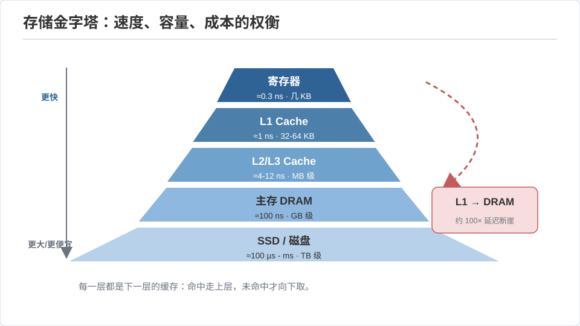
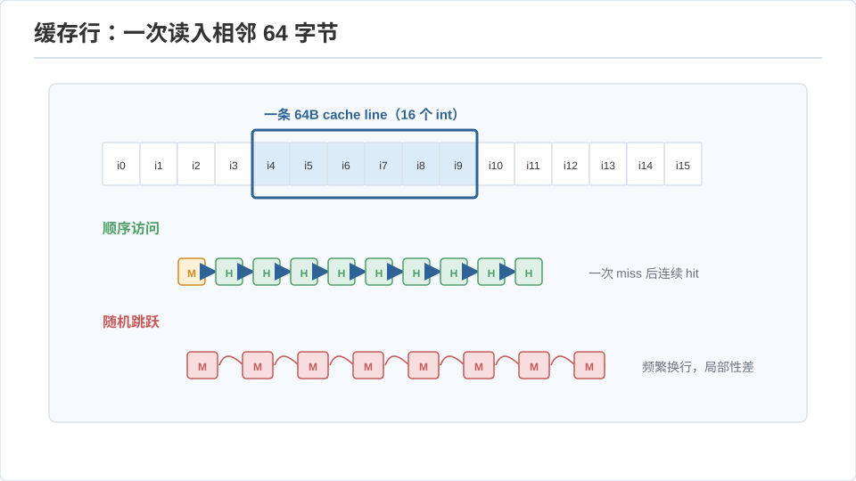
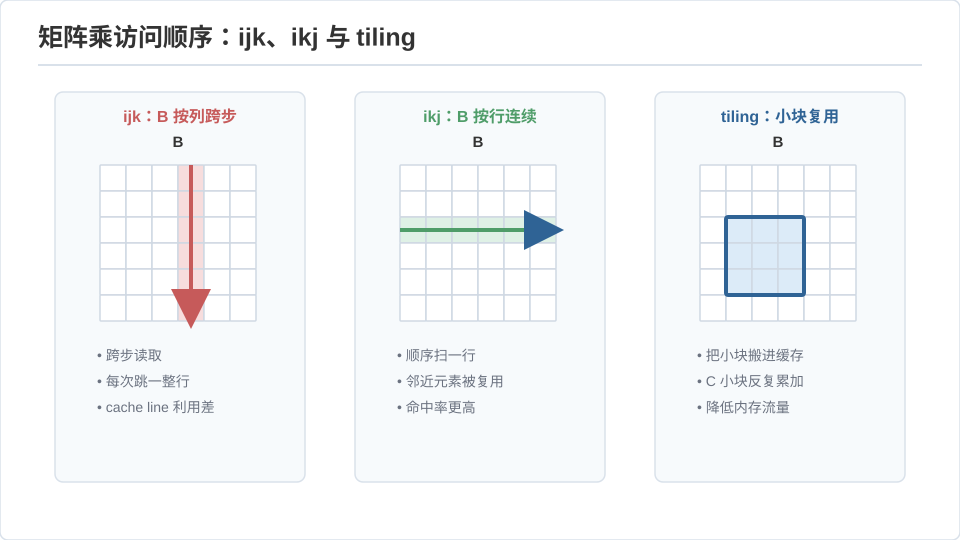

本页目录
CSAPP II · 存储层级与缓存
对标：CS:APP 第 6 章 ｜ 前置：csapp-01、perf 线（本页是性能工程的物理基础） 这一页解释计算机系统里最反直觉、又最能立刻变现的事实：内存不是一块均匀的平地，是一座速度差 100 倍的金字塔。同一个算法，只因访问内存的顺序不同，就能快 10 倍——不是玄学，是缓存。理解存储层级，是你从"代码能跑"到"代码跑得快"的第一道门。
1. 存储金字塔：为什么快慢差 100 倍
存储器有一个残酷的物理三难：快、大、便宜只能取其二。于是系统把它们堆成层级，每层给下层当缓存：
| 层 | 典型延迟 | 容量 | 一句话 |
|---|---|---|---|
| 寄存器 | < 1 ns | 几十个 | CPU 手里 |
| L1 缓存 | ~1 ns | 32 KB | 最近最常用 |
| L2 / L3 缓存 | ~4 / ~15 ns | 256KB / 数十 MB | 芯片上 |
| 主存 DRAM | ~100 ns | 数十 GB | 慢 CPU 100 倍 |
| SSD / 磁盘 | ~10 µs / ~10 ms | TB | 慢百万~千万倍 |

关键数感：访问主存比 L1 慢约 100 倍，比一次 CPU 运算慢约 200 倍。所以现代程序的瓶颈常常不是"算得慢"而是"等内存"——CPU 大量时间在 stall（干等数据）。这颠覆了"数操作数"的朴素性能观：内存访问模式才是主角。
2. 局部性：缓存赖以生效的假设
缓存能加速，全靠程序有局部性：
- 时间局部性：刚访问的数据很快会再访问（循环变量、热点函数）。
- 空间局部性：访问了一个地址，附近地址很快也会访问（数组顺序遍历）。
缓存据此工作：以缓存行（cache line，通常 64 字节）为单位搬运——你读一个 int，它顺手把邻近 64 字节都拉进缓存。于是"顺序访问"几乎免费（一次搬运喂 16 个 int），"随机跳跃"每次都 miss。这条 64 字节的规律解释了本页所有性能现象。

3. 缓存的组织与三种 miss
缓存是硬件哈希表：地址被切成 [标记 tag | 组索引 set | 块内偏移]，按组索引找槽、比标记命中。组相联度（每组几路）平衡冲突与成本。三种 miss（3C 模型）：
- 强制 miss（cold）：第一次访问，躲不掉。
- 容量 miss：工作集比缓存大，装不下。
- 冲突 miss：不同地址映射到同一组互相踢出——"跨步恰好等于缓存大小的倍数"时灾难性（如遍历大矩阵的列，步长 = 行长）。
这直接推出优化手段：让工作集塞进缓存（分块 tiling）、让访问连续（改循环顺序、改数据布局 SoA vs AoS）。
4. 变现：矩阵乘法的循环顺序
最经典的实证——朴素矩阵乘 \(C=AB\) 有 6 种循环嵌套顺序，数学完全等价，速度差数倍：
// ijk 顺序：内层对 B 按列访问（跨步 n，空间局部性差）→ 慢
for i: for j: for k: C[i][j] += A[i][k]*B[k][j];
// ikj 顺序：内层 j 对 B、C 都按行访问（连续）→ 快数倍
for i: for k: for j: C[i][j] += A[i][k]*B[k][j];
再进一步——分块（blocking / tiling）：把大矩阵切成能塞进 L1 的小块 \(b\times b\)，块内充分复用后再换块。复用率从 \(O(1)\) 提到 \(O(b)\)，大矩阵可再快数倍。这不是编译器能自动做全的——"为缓存重写循环"是 HPC 的核心手艺（🔗 perf-02 深入、gpu 线是它在 GPU 上的放大版）。
这就是 [实验 L01]：naive / 转置 / 分块三版矩阵乘，在你 Mac 上实测加速比——亲手看到"存储层级"这四个字值多少倍。

5. 更深的两个坑：伪共享与预取
- 伪共享（false sharing）：多线程各改各的变量，但它们落在同一缓存行——每次写都让对方缓存失效，性能暴跌（🔗 par 线）。解法：把线程私有数据填充到不同缓存行。
- 硬件预取：CPU 会预测顺序访问、提前拉数据——所以顺序遍历比缓存命中率算出来的还快；随机访问则享受不到。"对硬件预取友好"又是偏爱顺序访问的一个理由。
5'. 练习与要点
例 1（算一次 miss 的代价） 矩阵 \(1024\times1024\) 的 double（8 字节）：一行 8 KB，L1 只 32 KB——按列遍历几乎每次 miss。估算 ijk vs ikj 的 miss 次数比，预测加速比，再用 [L01] 实测对照。从模型到实测闭环。
例 2（缓存行数感） 为什么把 struct 里最常一起访问的字段放相邻位置能提速？答：它们更可能同处一个缓存行，一次搬运全到。数据布局 = 隐形的性能杠杆。
例 3（伪共享复现） 两个线程分别累加数组相邻两元素 vs 相隔 64 字节的两元素——后者快数倍。这是 [L07/L10] 并行实验里会撞见的真实陷阱，先在脑子里预演一遍。\(\blacksquare\)
▶ 实验 L01（缓存分块矩阵乘法）：
labs/L01-cache-blocking/—— naive vs 循环重排 vs 分块，实测加速比，画 miss 曲线。这是全站第一个"看见存储层级"的实验。
下一页：CSAPP III——链接与异常控制流：多个 .o 怎么拼成一个程序，信号与进程切换背后发生了什么。